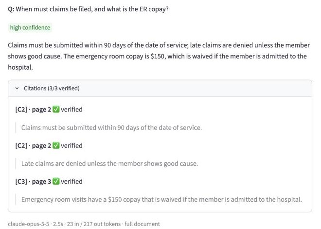

Ask a document a question. Every claim in the answer comes with its page, the exact quote, and a check that the quote is really there.
AI chat can summarise a 50-page policy in seconds. But you can't tell which parts are real.

18-question test on three short sample documents; longer documents cost more. Python · FastAPI · Claude · Streamlit · Modal · 34 automated tests.